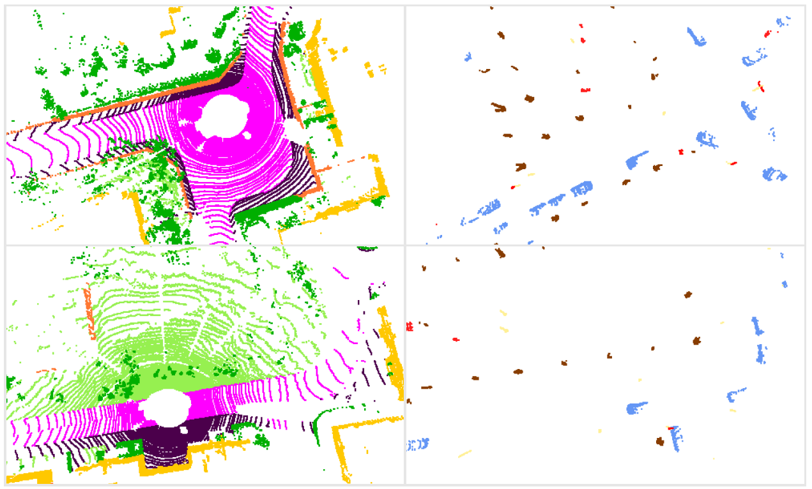
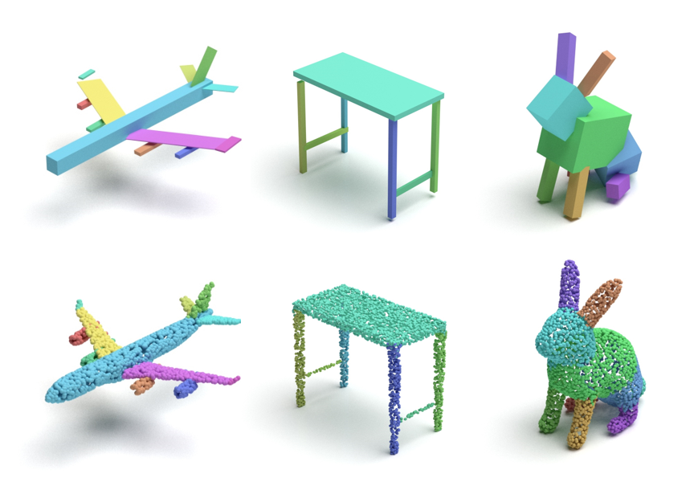
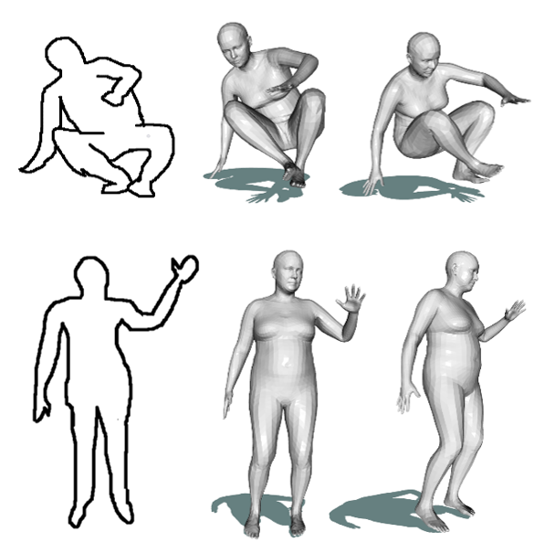

 |
Learning Scale-Adaptive Representations for Point-Level LiDAR Semantic SegmentationTongfeng Zhang, Xuejin Chen, Kaizhi YangAccepted to 3DV 2021 The massive objects with various scales and categories in autonomous driving scenes pose a great challenge to the LiDAR semantic segmentation task. Although the voxel-based 3d convolutional networks employed by existing state-of-the-art methods can extract features with different spatial scales, they cannot conduct effective discrimination and combination on them. In this paper, we propose a Scale-Adaptive Fusion (SAF) module that can progressively and selectively fuse features with different receptive fields to help the network deal with scale variations across objects adaptively. In addition, we propose a novel Local Point Refinement (LPR) module to address the quantization loss problem of voxel-based methods. It could take the geometric structure of original point cloud into account by converting voxel-wise feature to the point-wise one. Our proposed method is evaluated on three public datasets, i.e., SemanticKITTI, SemanticPOSS and nuScenes dataset and achieves competitive performance. |
 |
Unsupervised Learning for Cuboid Shape Abstraction via Joint Segmentation from Point CloudsKaizhi Yang, Xuejin ChenAccepted to SIGGRAPH 2021 Representing complex 3D objects as simple geometric primitives, known as shape abstraction, is important for geometric modeling, structural analysis, and shape synthesis. In this paper, we propose an unsupervised shape abstraction method to map a point cloud into a compact cuboid representation. We jointly predict cuboid allocation as part segmentation and cuboid shapes and enforce the consistency between the segmentation and shape abstraction for self-learning. For the cuboid abstraction task, we transform the input point cloud into a set of parametric cuboids using a variational auto-encoder network. The segmentation network allocates each point into a cuboid considering the point-cuboid affinity. In addition, several novel losses are designed to jointly supervise the two branches in terms of geometric similarity and cuboid compactness. [Paper] [Github] |
 |
Deep 3D Modeling of Human Bodies from Freehand SketchingKaizhi Yang, Jintao Lu, Siyu Hu, Xuejin ChenAccepted to MMM 2021 Creating high-quality 3D human body models by freehand sketching is challenging because of the sparsity and ambiguity of hand-drawn strokes. In this paper, we present a sketch-based modeling system for human bodies using deep neural networks. Considering the large variety of human body shapes and poses, we adopt the widely-used parametric representation, SMPL, to produce high-quality models that are compatible with many further applications. In order to solve the huge ambiguity in mapping sketches onto the manifold of human bodies, we introduce the skeleton as the intermediate representation. Our skeleton-aware modeling network first interprets sparse joints from coarse sketches and then predicts the SMPL parameters based on joint-wise features. This skeleton-aware intermediate representation effectively reduces the ambiguity and complexity between the two high-dimensional spaces. Based on our light-weight interpretation network, our system supports interactive creation and editing of 3D human body models by freehand sketching. [Paper] |